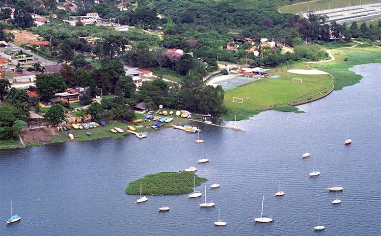

Pontos de Coleta
É possível reutilizar cascas e talos de alimentos para fazer adubo orgânico, o que é uma forma de reduzir o desperdício e ajudar o meio ambiente.

Os Pontos de Coleta , o nosso ponto de coleta é na horta Caobi, um dos parceiros do Projeto Raízes d'Guará localizada próxima a represa Guarapiranga (de onde vem o nome ), um espaço de muito verde e preserva ambiemtal dentro da grande cidade de São Paulo.
Parque Ecológico Guarapiranga
Inaugurado em 1999 na Zona Sul da cidade de São Paulo, o Parque Ecológico do Guarapiranga tem como objetivo fundamental preservar a fauna e flora existente na região, além de despertar a consciência ambiental nos mais de 370 mil visitantes que recebe durante todo ano, principalmente a população do entorno.